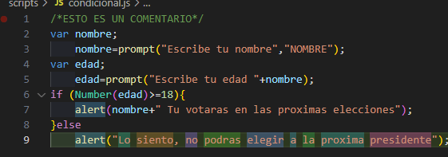

| Código en JS que mediante un prompt solicita la entrada del dato NOMBRE de igual forma mediante el prompt solicita la edad de la persona, valida la información y si es mayor de edad envia un mensaje señalando que puede votar en caso contrario indica que no votará en las proximas elecciones. |  |